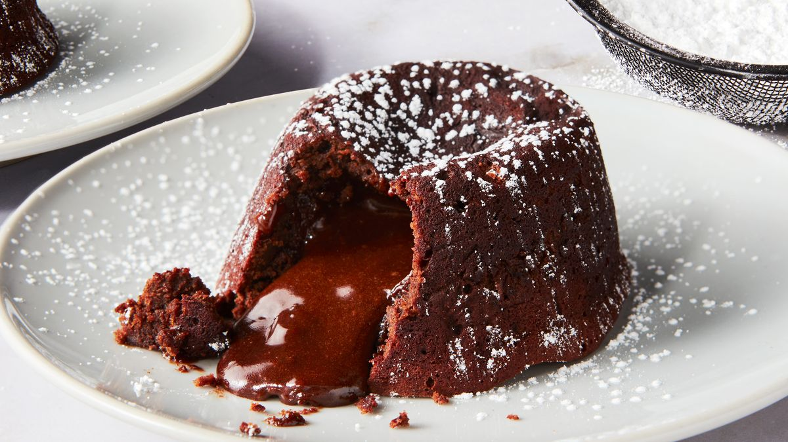
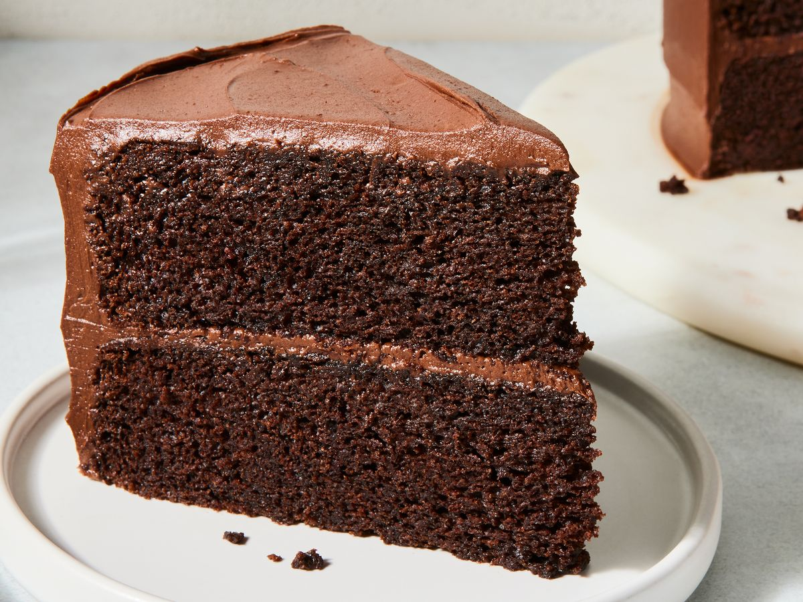
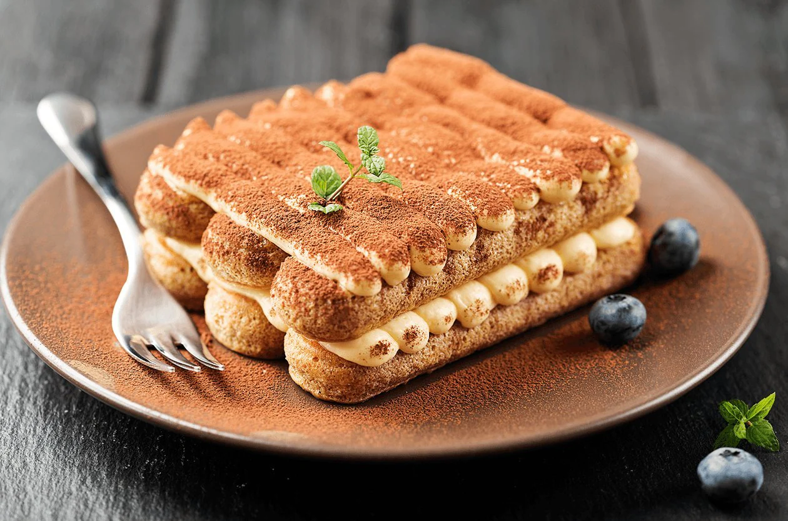
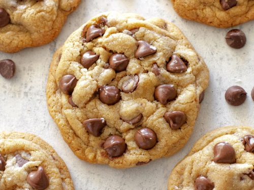

Chocolate Lava Cake
Indulge in the rich and gooey goodness of chocolate lava cake. This decadent dessert is perfect for chocolate lovers
and is surprisingly easy to make.
-
Preparation time
- Total: Approximately 30 minutes
- Preparation: 15 minutes
- Cooking: 15 minutes
-
Ingredients
- 1/2 cup (115g) unsalted butter
- 4 oz (115g) semisweet chocolate
- 1 cup (200g) granulated sugar
- 2 large eggs
- 2 large egg yolks
- 1 teaspoon vanilla extract
- 1/4 cup (30g) all-purpose flour
- Pinch of salt
-
Instructions
-
Preheat your oven to 425°F (220°C). Grease and flour four 6-ounce ramekins.
-
In a microwave-safe bowl, melt the butter and chocolate together in the microwave, stirring every 30 seconds until smooth. Alternatively, you can melt them together in a double boiler.
-
In a separate bowl, whisk together the sugar, eggs, egg yolks, and vanilla extract until well combined.
-
Gradually pour the melted chocolate mixture into the egg mixture, stirring constantly.
-
Sift in the flour and salt, and gently fold until just combined.
-
Divide the batter evenly among the prepared ramekins.
-
Place the ramekins on a baking sheet and bake in the preheated oven for 12-14 minutes, or until the edges are set but the centers are still soft.
-
Remove from the oven and let cool for 1-2 minutes. Then, carefully invert each ramekin onto a serving plate and gently lift to unmold. Serve immediately, garnished with powdered sugar or a scoop of vanilla ice cream, if desired.
Nutrition
The table below shows nutritional values per serving.
Calories
|
450kcal
|
Carbs
|
40g
|
Protein
|
6g
|
Fat
|
30g
|

Moist Chocolate Cake
Savor the irresistible delight of moist chocolate cake. This decadent dessert is a chocolate lover's dream, and it's surprisingly simple to prepare.
-
Preparation time
- Total: Approximately 45 minutes
- Preparation: 15 minutes
- Baking: 30 minutes
-
Ingredients
- 1 and 3/4 cups (220g) all-purpose flour
- 3/4 cup (65g) unsweetened cocoa powder
- 2 cups (400g) granulated sugar
- 1 and 1/2 teaspoons baking powder
- 1 and 1/2 teaspoons baking soda
- 1 teaspoon salt
- 2 large eggs
- 1 cup (240ml) whole milk
- 1/2 cup (120ml) vegetable oil
- 2 teaspoons vanilla extract
- 1 cup (240ml) boiling water
-
Instructions
-
Preheat your oven to 350°F (175°C). Grease and flour two 9-inch round cake pans.
-
In a large mixing bowl, sift together the flour, cocoa powder, sugar, baking powder, baking soda, and salt.
-
Add the eggs, milk, oil, and vanilla extract to the dry ingredients. Beat on medium speed for 2 minutes, then stir in the boiling water. The batter will be thin.
-
Pour the batter evenly into the prepared cake pans.
-
Bake in the preheated oven for 30-35 minutes, or until a toothpick inserted into the center comes out clean.
-
Remove the cakes from the oven and allow them to cool in the pans for 10 minutes. Then, transfer them to a wire rack to cool completely.
-
Once cooled, you can frost the cakes with your favorite frosting or simply dust them with powdered sugar. Serve and enjoy!
Nutrition
The table below shows nutritional values per serving.
| Calories |
320 kcal |
| Carbohydrates |
50g |
| Protein |
5g |
| Fat |
12g |

Tiramisu
Enjoy the delightful taste of tiramisu. This delicious dessert is made with layers of coffee-soaked ladyfingers, mascarpone cheese, and whipped cream, topped with a dusting of cocoa powder.
-
Preparation Time
- Total: Approximately 45 minutes (including chilling time)
- Preparation: 30 minutes
- Chilling: At least 4 hours (preferably overnight)
-
Ingredients
- 3 large eggs, at room temperature
- 3/4 cup (150g) granulated sugar
- 1 cup (240ml) espresso or very strong coffee, cooled
- 1 tablespoon cocoa powder (for dusting)
- 200g mascarpone cheese, at room temperature
- 1 cup (240ml) heavy cream
- 1 package (200g) ladyfingers
- 1/4 cup (60ml) coffee liqueur (optional)
- A pinch of salt
-
Instructions
-
In a large mixing bowl, combine the egg yolks and granulated sugar. Beat on high speed until light and fluffy, about 5 minutes.
-
In a separate bowl, beat the mascarpone cheese and a pinch of salt with an electric mixer until smooth and creamy, about 1-2 minutes.
-
In another bowl, whip the heavy cream until soft peaks form and it's easy to fold into the mascarpone mixture.
-
Gradually fold the beaten egg yolks into the mascarpone mixture using a spatula until well combined.
-
Gently fold the whipped cream into the mixture until smooth and homogeneous.
-
Pour the espresso or coffee into a shallow dish. (Optionally, add coffee liqueur.)
-
Quickly dip each ladyfinger into the coffee mixture and arrange a layer in the bottom of your serving dish.
-
Spread a layer of the mascarpone mixture over the ladyfingers. Dust with a layer of cocoa powder.
-
Dip the remaining ladyfingers in the coffee mixture and arrange another layer on top of the mascarpone mixture.
-
Spread the remaining mascarpone mixture over the ladyfingers and dust with cocoa powder again.
-
Chill the tiramisu in the refrigerator for at least 4 hours, preferably overnight.
-
Before serving, dust the top with additional cocoa powder. Slice and enjoy!

Chocolate Chip Cookies
Treat yourself to the timeless delight of chocolate chip cookies. These cookies are soft, chewy, and packed with chocolate chips, making them a favorite for all ages.
-
Preparation Time
- Total: Approximately 30 minutes (including chilling time)
- Preparation: 15 minutes
- Baking: 10-12 minutes
-
Ingredients
- 1 cup (230g) unsalted butter, softened
- 3/4 cup (150g) granulated sugar
- 3/4 cup (150g) packed brown sugar
- 2 large eggs
- 1 teaspoon vanilla extract
- 2 and 1/4 cups (280g) all-purpose flour
- 1 teaspoon baking soda
- 1/2 teaspoon salt
- 2 cups (340g) semisweet chocolate chips
-
Instructions
-
Preheat your oven to 375°F (190°C). Line baking sheets with parchment paper or silicone baking mats.
-
In a large mixing bowl, cream together the softened butter, granulated sugar, and brown sugar until smooth and creamy.
-
Beat in the eggs, one at a time, followed by the vanilla extract.
-
In a separate bowl, whisk together the flour, baking soda, and salt.
-
Gradually add the dry ingredients to the wet ingredients, mixing until just combined.
-
Fold in the chocolate chips until evenly distributed throughout the dough.
-
Cover the dough and chill in the refrigerator for at least 30 minutes, or up to 24 hours. Chilling helps prevent spreading and enhances flavor.
-
Once chilled, drop rounded tablespoons of dough onto the prepared baking sheets, spacing them about 2 inches apart.
-
Bake in the preheated oven for 10-12 minutes, or until the edges are golden brown and the centers are still soft.
-
Allow the cookies to cool on the baking sheets for a few minutes before transferring them to wire racks to cool completely.
-
Enjoy your delicious homemade chocolate chip cookies with a glass of milk or your favorite beverage!